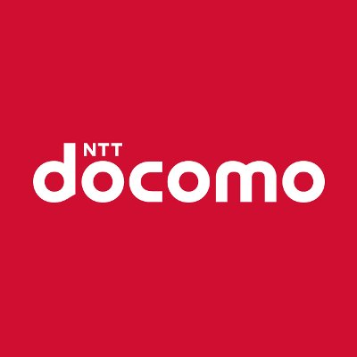

基本情報
名前: 西田 拳 (ニシダ ケン)
所属: 北海道大学 情報科学院
学歴
- 中学校: 区立第三砂町中学校
- 高校: 東洋高校
- 大学: 北海道大学
- 大学院: 北海道大学
研究室
所属: 情報知識ネットワーク研究室
共同研究
パートナー: 東京大学 林研究室
ソーシャルメディア


インターンシップと経験
ソニー
役職: 機械学習スペシャリスト
期間: 3週間 2024年2月
ソニー製品、各種サービス、アプリケーション向けに、AI/機械学習を活用し商品の価値を向上させる先行技術開発、及びアプリケーション開発業務を経験。

NTTドコモ
役職: マーケティング
期間: 2週間 2023年8月
会員基盤を通じて社会課題解決を実現するサービス「カボニューレコード」のサービスグロース及び領域拡大に向けた検討を経験。

アーキベース
役職: エンジニア
期間: 2ヶ月間 2023年4月~5月
[Description]